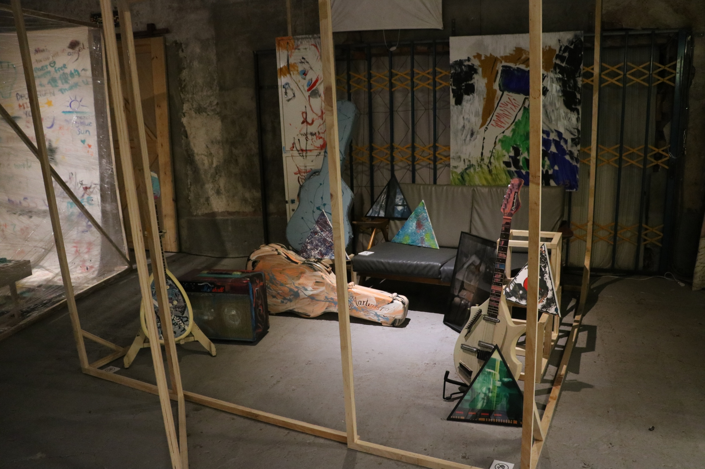
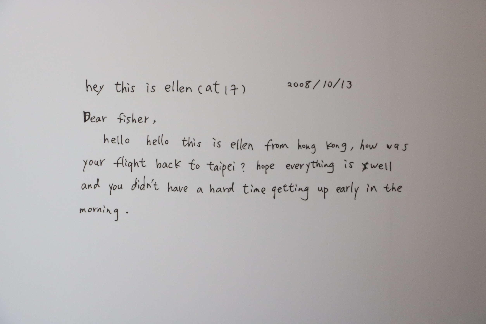

簡介
香港音樂人盧凱彤逝世半年，其妻子兼攝影師余靜萍親自策展《你的左手我的右手》，於 3 月 27 日舉行，展出盧凱彤的畫與余靜萍的攝影作品。
兩人於 2016 年結婚，決定廝守一生，雖終未能白頭偕老，但余靜萍這次透過作品，再次與盧凱彤同在。
 盧凱彤與余靜萍的房間。感想
去年八月盧凱彤的離世引發各界震驚，而盧凱彤的歌迷和親友們在這幾個月來，仍持續以各種方式思念緬懷他，
而這一次的展覽由盧凱彤的妻子攝影師余靜萍與知名策展人方序中共同策展，並於3/27盧凱彤的生日開展，
展區內有許多盧凱彤的畫作，有些並置，也有些面對著放置，這其實代表著這些作品之間的對話，
我也對這些作品們之間所抒發的情緒感到印象深刻，並試著去融入到作品的情緒內，除此之外展場內也還原了盧凱彤與余靜萍email的對話和兩人共同居住的環境，這也是我第一次親自看到這麼做的展覽。
 盧凱彤傳給余靜萍的訊息。